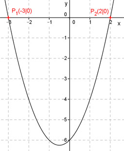

Aufgabe 47 Bestimmen Sie die quadratische Funktion der Form y = x2 + bx + c, die durch die Punkte P1(-3|0) und P2(2|0) geht. Punktkoordinaten in y = x2 + bx + c einsetzen: x1 = -3 und y1 = 0 ergibt 0 = (-3)2 - 3b + c 0 = 9 - 3b + c | -9 -9 = -3b + c (1) x2 = 2 und y2 = 0 ergibt 0 = (2)2 + 2b + c ergibt 0 = 4 + 2b + c |-4 -4 = 2b + c (2) Additionsverfahren: -9 = -3b + c | *(-1) -4 = 2b + c 9 = 3b - c -4 = 2b + c --------------- 5 = 5b |:5 b = 1 In (2) eingesetzt: -4 = 2 * 1 + c | -2 c = -6 y = x2 + x – 6 